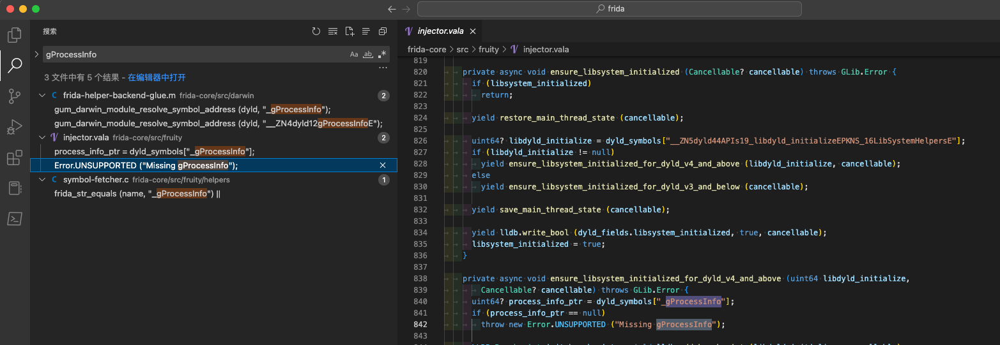
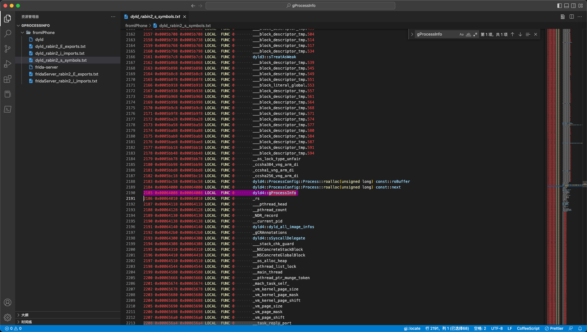
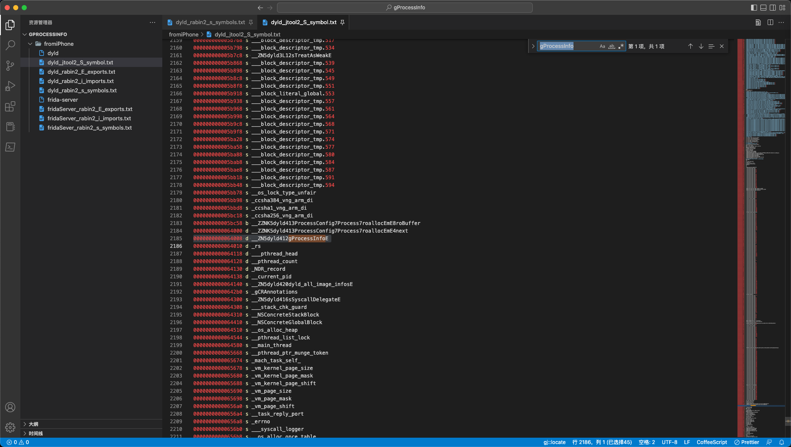

自己编译frida-server
iPhone11中，已用XinaA15进行了rootless越狱，然后去用frida：
crifan@licrifandeMacBook-Pro ~ frida -U -f com.apple.store.Jolly -l /Users/crifan/dev/dev_root/iosReverse/AppleStore/dynamicDebug/frida/hookNSFileManager.js
____
/ _ | Frida 16.0.8 - A world-class dynamic instrumentation toolkit
| (_| |
> _ | Commands:
/_/ |_| help -> Displays the help system
. . . . object? -> Display information about 'object'
. . . . exit/quit -> Exit
. . . .
. . . . More info at https://frida.re/docs/home/
. . . .
. . . . Connected to iPhone (id=00008030-00011C49366B802E)
Failed to attach: missing gProcessInfo
结果报错：Failed to attach missing gProcessInfo
之后就是尝试解决此问题，最终涉及到：自己去编译frida-server的过程。
此处记录相关内容和心得，供参考。
研究gProcessInfo的来源
之前frida-ios-dump也遇到类似问题
而之前就见过此处的missing gProcessInfo，找到之前的：
- 原因是：属于偶尔的bug
- 解决办法：多试几次
-》此处：继续尝试多次，始终无法规避，始终报错。
研究frida中是否存在导入外部变量gProcessInfo
从报错信息Failed to attach: missing gProcessInfo中推测：
gProcessInfo是（iOS的app启动阶段涉及到的）dyld中的变量
怀疑是类似于：
- frida import 变量：gProcessInfo
- dyld export 变量：gProcessInfo
这种机制
所以去研究看看：
frida中，是否有import的变量，叫做gProcessInfo
后来确认，missing gProcessInfo来自iPhone端的frida-server
去导出frida-server
scp root@192.168.2.12:/var/sbin/frida-server frida-server
然后继续静态分析：
rabin2 -i frida-server > fridaServer_rabin2_i_imports.txt
rabin2 -E frida-server > fridaServer_rabin2_E_exports.txt
没找到gProcessInfo
另外找到：
dyld/dyldMain.cpp
namespace dyld4 {
...
#if TARGET_OS_OSX
static void* getProcessInfo()
{
return gProcessInfo;
}
而根据：
【记录】dyld相关资料：启动过程
知道了：
- dyld
- 之前是：dyld2
- 后来是：dyld3
- 此处是：dyld4
即：dyld有3个版本，dyld2、dyld3、dyld4
最后确认：
不是Frida（的frida-server）引用了外部的变量：
dyld源码中的gProcessInfo
而是：
frida源码中有gProcessInfo
即：
frida-core/src/fruity/injector.vala中就有对应代码：
ensure_libsystem_initialized_for_dyld_v4_and_above
...
throw new Error.UNSUPPORTED ("Missing gProcessInfo");
Frida源码中找到了：gProcessInfo
missing gProcessInfo相关完整的代码：

frida-core/src/fruity/injector.valaprivate async void ensure_libsystem_initialized_for_dyld_v4_and_above (uint64 libdyld_initialize, Cancellable? cancellable) throws GLib.Error { uint64? process_info_ptr = dyld_symbols["_gProcessInfo"]; if (process_info_ptr == null) throw new Error.UNSUPPORTED ("Missing gProcessInfo"); ...
其他地方也有：
frida-core/src/fruity/helpers/symbol-fetcher.csize_t frida_fetch_dyld_symbols (char * output_buffer, const void * dyld_load_address) { ... for (i = dyld.dysymtab->ilocalsym; i != dyld.dysymtab->nlocalsym; i++) { const struct nlist_64 * sym = &symbols[i]; const char * name = strings + sym->n_un.n_strx; if (frida_str_contains (name, "libdyld_initialize") || frida_str_contains (name, "restartWithDyldInCache") || frida_str_equals (name, "_gProcessInfo") || frida_str_contains (name, "launchWithClosure") || frida_str_contains (name, "initializeMainExecutable") || frida_str_contains (name, "registerThreadHelpers") || frida_str_has_prefix (name, "_dlopen") || frida_str_has_prefix (name, "_strcmp") || frida_str_contains (name, "doModInitFunctions") || frida_str_contains (name, "doGetDOFSections")) { if (n != 0) frida_append_char (&cursor, '\n'); frida_append_uint64 (&cursor, (uint64_t) (dyld.base + sym->n_value)); frida_append_char (&cursor, '\t'); frida_append_string (&cursor, name); n++; } }frida-core/src/darwin/frida-helper-backend-glue.m
modern_entry_address = gum_darwin_module_resolve_symbol_address (dyld, "__ZN5dyld44APIs19_libdyld_initializeEPKNS_16LibSystemHelpersE");
instance->dyld_flavor = (modern_entry_address != 0) ? FRIDA_DYLD_V4_PLUS : FRIDA_DYLD_V3_MINUS;
if (instance->dyld_flavor == FRIDA_DYLD_V4_PLUS)
{
instance->modern_entry_address = modern_entry_address;
legacy_entry_address = 0;
instance->info_ptr_address = gum_darwin_module_resolve_symbol_address (dyld, "_gProcessInfo");
if (instance->info_ptr_address == 0)
goto dyld_probe_failed;
}
...
instance->dlopen_address = gum_darwin_module_resolve_symbol_address (dyld, "_dlopen");
if (instance->dlopen_address == 0)
instance->dlopen_address = gum_darwin_module_resolve_symbol_address (dyld, "_dlopen_internal");
instance->register_helpers_address = gum_darwin_module_resolve_symbol_address (dyld, "__ZL21registerThreadHelpersPKN4dyld16LibSystemHelpersE");
instance->dlerror_clear_address = gum_darwin_module_resolve_symbol_address (dyld, "__ZL12dlerrorClearv");
instance->info_address = gum_darwin_module_resolve_symbol_address (dyld, "__ZN4dyld12gProcessInfoE");
instance->helpers_ptr_address = gum_darwin_module_resolve_symbol_address (dyld, "__ZN4dyld17gLibSystemHelpersE");
instance->do_modinit_strcmp_checks = frida_find_modinit_strcmp_checks (task, dyld);
...
心得：
其中有很多这种：
编译器编译后的固定的函数名：
_dlopen_dlopen_internal__ZL21registerThreadHelpersPKN4dyld16LibSystemHelpersE__ZL12dlerrorClearv__ZN4dyld12gProcessInfoE- 其中包含：
gProcessInfo
- 其中包含：
__ZN4dyld17gLibSystemHelpersE
研究Frida中Missing gProcessInfo出错的逻辑和原因
经过后续了解： 【记录】dyld源码中的gProcessInfo
应该把：
- 只判断是否存在：_gProcessInfo
改为：
- 同时判断多种情况（先后顺序是）
_gProcessInfo- 对应原始代码中：
gProcessInfo
- 对应原始代码中：
__ZN5dyld412gProcessInfoE- 对应原始代码中：
dyld4::gProcessInfo
- 对应原始代码中：
__ZN4dyld12gProcessInfoE- 对应原始代码中：
dyld::gProcessInfo应该就可以了。
- 对应原始代码中：
研究二进制/usr/lib/dyld中是否包含或导出变量_gProcessInfo
对于iPhone中的dyld：
iPhone11-151:~ root# ls -lh /usr/lib/dyld
-rwxr-xr-x 1 root wheel 630K Oct 15 2021 /usr/lib/dyld*
用：
scp root@192.168.2.12:/usr/lib/dyld dyld
导出后，再从dyld中导出符号：
rabin2 -s dyld > dyld_rabin2_s_symbols.txt
发现是有的：
dyld_rabin2_s_symbols.txt
2185 0x00064008 0x00064008 LOCAL FUNC 0 dyld4::gProcessInfo

另外，突然注意到：
fromiPhone/dyld_rabin2_s_symbols.txt891 0x0002e500 0x0002e500 LOCAL FUNC 0 dyld4::APIs::_dyld_shared_cache_optimized() 892 0x0002e57c 0x0002e57c LOCAL FUNC 0 dyld4::APIs::_dyld_register_for_image_loads(void (*)(mach_header const*, char const*, bool)) 893 0x0002e680 0x0002e680 LOCAL FUNC 0 ____ZN5dyld44APIs30_dyld_register_for_image_loadsEPFvPK11mach_headerPKcbE_block_invoke 894 0x0002e76c 0x0002e76c LOCAL FUNC 0 ____ZN5dyld44APIs30_dyld_register_for_image_loadsEPFvPK11mach_headerPKcbE_block_invoke_2 895 0x0002e7b4 0x0002e7b4 LOCAL FUNC 0 ____ZN5dyld44APIs35_dyld_register_for_bulk_image_loadsEPFvjPPK11mach_headerPPKcE_block_invoke_2 896 0x0002e7c8 0x0002e7c8 LOCAL FUNC 0 dyld4::APIs::dyld_shared_cache_file_path() 897 0x0002e810 0x0002e810 LOCAL FUNC 0 dyld4::APIs::dyld_has_inserted_or_interposing_libraries() 898 0x0002e874 0x0002e874 LOCAL FUNC 0 dyld4::APIs::dyld_shared_cache_find_iterate_text(unsigned char const*, char const**, void ( block_pointer)(dyld_shared_cache_dylib_text_info const*)) 899 0x0002ea8c 0x0002ea8c LOCAL FUNC 0 dyld4::findCacheInDirAndMap(dyld4::RuntimeState&, unsigned char const*, char const*, unsigned long&) 900 0x0002eb5c 0x0002eb5c LOCAL FUNC 0 ____ZN5dyld44APIs35dyld_shared_cache_find_iterate_textEPKhPPKcU13block_pointerFvPK33dyld_shared_cache_dylib_text_infoE_block_invoke.173 901 0x0002ebe0 0x0002ebe0 LOCAL FUNC 0 dyld4::APIs::dyld_shared_cache_iterate_text(unsigned char const*, void ( block_pointer)(dyld_shared_cache_dylib_text_info const*)) 902 0x0002ec60 0x0002ec60 LOCAL FUNC 0 dyld4::APIs::_dyld_fork_child()
即：
此处symbol中，也是有一些：
- ____ZN5dyld44APIs30_dyld_register_for_image_loadsEPFvPK11mach_headerPKcbE_block_invoke
这种编译后的函数名的值的
同时，也有，编译前的，普通的函数名：
- dyld4::APIs::_dyld_register_for_image_loads(void ()(mach_header const, char const*, bool))
-》所以突然想到：
估计是，编译前的，普通函数名，是：
此处rabin2，自动帮忙翻译的（因为其懂得编译和反编译函数名 symbol的内在逻辑？）
-》所以去找找：
是否有机会，让rabin2，只输出：
编译后的symbol名字？
这样就能找到，确认：
dyld4::gProcessInfo
是不是：
__ZN5dyld44gProcessInfo
了
去找找看：
rabin2的其他参数，能输出原始的symbol的？
对了，或许也可以用另外的工具：jtool2
jtool2 -S dyld > dyld_jtool2_S_symbol.txt
果然是我们希望的，原始的，编译后的，没有被解析的：gProcessInfo
dyld_jtool2_S_symbol.txt0000000000064008 d __ZN5dyld412gProcessInfoE

所以就是：
dyld4::gProcessInfo- 编译生成：
__ZN5dyld412gProcessInfoE - 不是我以为的：
__ZN5dyld44gProcessInfo
- 编译生成：
再去dyld源码中，多搜搜：
namespace dyld4
看看是否有其他新发现
namespace dyld4
/Users/crifan/dev/dev_src/ios_reverse/AppleOpenSource/dyld/dyld-dyld-1042.1/dyld/DebuggerSupport.h
namespace dyld4 {
using lsl::Allocator;
void addImagesToAllImages(RuntimeState& state, uint32_t infoCount, const dyld_image_info info[], uint32_t initialImageCount);
void removeImageFromAllImages(const mach_header* loadAddress);
...
}
extern "C" void lldb_image_notifier(enum dyld_image_mode mode, uint32_t infoCount, const dyld_image_info info[]);
extern dyld_all_image_infos* gProcessInfo;
->也还是：gProcessInfo
->不是放在namespace dyld4中的
/Users/crifan/dev/dev_src/ios_reverse/AppleOpenSource/dyld/dyld-dyld-1042.1/dyld/DyldAPIs.cpp
// internal libc.a variable that needs to be reset during fork()
extern mach_port_t mach_task_self_;
using dyld3::MachOFile;
using dyld3::MachOLoaded;
extern const dyld3::MachOLoaded __dso_handle;
...
namespace dyld4 {
...
}
-》自己当前是dyld4的namespace，但是也会引用外部变量：
- 其中也有：
- 没有namespace的：
extern mach_port_t mach_task_self_;
- 和另外的namespace的：
dyld3extern const dyld3::MachOLoaded __dso_handle;
- 没有namespace的：
然后去：
【未解决】rabin2输出C++的未解析的原始的编译后的函数名mangle name
所以去：
【未解决】C++代码中函数变量编译生成符号symbol的规则
期间去：
【已解决】从C++的编译后的符号symbol得到原始的变量函数名
另外，看看此处的dyld版本：
iPhone11-151:~ root# /usr/lib/dyld --version
-sh: /usr/lib/dyld: cannot execute binary file: Exec format error
无法查看。
【已解决】iOS 13.3的iPhone7中/usr/lib/dyld的版本和gProcessInfo相关信息
也去研究：dyld源码中的gProcessInfo
至此找到：
gProcessInfo- 变量来源：
dyld/dyld-dyld-1042.1/dyld/DebuggerSupport.cpp
以及：struct dyld_all_image_infos* gProcessInfo = &dyld_all_image_infos;
- 变量来源：
struct dyld_all_image_infos- 定义
libdyld/dyld_process_info_internal.hstruct dyld_all_image_infos_32struct dyld_all_image_infos_64
include/mach-o/dyld_images.hstruct __attribute__((aligned(16))) dyld_all_image_infos
- 定义
具体定义详见：
（1）include/mach-o/dyld_images.h
// Must be aligned to support atomic updates
// Note sim cannot assume alignment until all host dylds are new enough
#if TARGET_OS_SIMULATOR
struct dyld_all_image_infos
#else
struct __attribute__((aligned(16))) dyld_all_image_infos
#endif
{
uint32_t version; /* 1 in Mac OS X 10.4 and 10.5 */
uint32_t infoArrayCount;
#if defined(__cplusplus) && (BUILDING_LIBDYLD || BUILDING_DYLD)
std::atomic<const struct dyld_image_info*> infoArray;
#else
const struct dyld_image_info* infoArray;
#endif
dyld_image_notifier notification;
bool processDetachedFromSharedRegion;
/* the following fields are only in version 2 (Mac OS X 10.6, iPhoneOS 2.0) and later */
bool libSystemInitialized;
const struct mach_header* dyldImageLoadAddress;
/* the following field is only in version 3 (Mac OS X 10.6, iPhoneOS 3.0) and later */
void* jitInfo;
/* the following fields are only in version 5 (Mac OS X 10.6, iPhoneOS 3.0) and later */
const char* dyldVersion;
const char* errorMessage;
uintptr_t terminationFlags;
/* the following field is only in version 6 (Mac OS X 10.6, iPhoneOS 3.1) and later */
void* coreSymbolicationShmPage;
/* the following field is only in version 7 (Mac OS X 10.6, iPhoneOS 3.1) and later */
uintptr_t systemOrderFlag;
/* the following field is only in version 8 (Mac OS X 10.7, iPhoneOS 3.1) and later */
uintptr_t uuidArrayCount;
const struct dyld_uuid_info* uuidArray; /* only images not in dyld shared cache */
/* the following field is only in version 9 (Mac OS X 10.7, iOS 4.0) and later */
struct dyld_all_image_infos* dyldAllImageInfosAddress;
/* the following field is only in version 10 (Mac OS X 10.7, iOS 4.2) and later */
uintptr_t initialImageCount;
/* the following field is only in version 11 (Mac OS X 10.7, iOS 4.2) and later */
uintptr_t errorKind;
const char* errorClientOfDylibPath;
const char* errorTargetDylibPath;
const char* errorSymbol;
/* the following field is only in version 12 (Mac OS X 10.7, iOS 4.3) and later */
uintptr_t sharedCacheSlide;
/* the following field is only in version 13 (Mac OS X 10.9, iOS 7.0) and later */
uint8_t sharedCacheUUID[16];
/* the following field is only in version 15 (macOS 10.12, iOS 10.0) and later */
uintptr_t sharedCacheBaseAddress;
#if defined(__cplusplus) && (BUILDING_LIBDYLD || BUILDING_DYLD)
// We want this to be atomic in libdyld so that we can see updates when we map it shared
std::atomic<uint64_t> infoArrayChangeTimestamp;
#else
uint64_t infoArrayChangeTimestamp;
#endif
const char* dyldPath;
mach_port_t notifyPorts[DYLD_MAX_PROCESS_INFO_NOTIFY_COUNT];
#if __LP64__
uintptr_t reserved[11-(DYLD_MAX_PROCESS_INFO_NOTIFY_COUNT/2)];
#else
uintptr_t reserved[9-DYLD_MAX_PROCESS_INFO_NOTIFY_COUNT];
#endif
// The following fields were added in version 18 (previously they were reserved padding fields)
uint64_t sharedCacheFSID;
uint64_t sharedCacheFSObjID;
/* the following field is only in version 16 (macOS 10.13, iOS 11.0) and later */
uintptr_t compact_dyld_image_info_addr;
size_t compact_dyld_image_info_size;
uint32_t platform; // FIXME: really a dyld_platform_t, but those aren't exposed here.
/* the following field is only in version 17 (macOS 10.16) and later */
uint32_t aotInfoCount;
const struct dyld_aot_image_info* aotInfoArray;
uint64_t aotInfoArrayChangeTimestamp;
uintptr_t aotSharedCacheBaseAddress;
uint8_t aotSharedCacheUUID[16];
};
（2）还有个分32和64的：
struct dyld_all_image_infos_32struct dyld_all_image_infos_64
->
libdyld/dyld_process_info_internal.h
struct dyld_all_image_infos_32 {
uint32_t version;
uint32_t infoArrayCount;
std::atomic<uint32_t> infoArray;
uint32_t notification;
bool processDetachedFromSharedRegion;
bool libSystemInitialized;
uint32_t dyldImageLoadAddress;
uint32_t jitInfo;
uint32_t dyldVersion;
uint32_t errorMessage;
uint32_t terminationFlags;
uint32_t coreSymbolicationShmPage;
uint32_t systemOrderFlag;
uint32_t uuidArrayCount;
uint32_t uuidArray;
uint32_t dyldAllImageInfosAddress;
uint32_t initialImageCount;
uint32_t errorKind;
uint32_t errorClientOfDylibPath;
uint32_t errorTargetDylibPath;
uint32_t errorSymbol;
uint32_t sharedCacheSlide;
std::array<uint8_t, 16> sharedCacheUUID;
uint32_t sharedCacheBaseAddress;
std::atomic<uint64_t> infoArrayChangeTimestamp;
uint32_t dyldPath;
uint32_t notifyMachPorts[8];
uint32_t reserved;
uint64_t sharedCacheFSID;
uint64_t sharedCacheFSObjID;
uint32_t compact_dyld_image_info_addr;
uint32_t compact_dyld_image_info_size;
uint32_t platform;
// the aot fields below will not be set in the 32 bit case
uint32_t aotInfoCount;
std::atomic<uint64_t> aotInfoArray;
uint64_t aotInfoArrayChangeTimestamp;
uint64_t aotSharedCacheBaseAddress;
std::array<uint8_t, 16> aotSharedCacheUUID[16];
};
struct dyld_all_image_infos_64 {
uint32_t version;
uint32_t infoArrayCount;
std::atomic<uint64_t> infoArray;
uint64_t notification;
bool processDetachedFromSharedRegion;
bool libSystemInitialized;
uint32_t paddingToMakeTheSizeCorrectOn32bitAndDoesntAffect64b; // NOT PART OF DYLD_ALL_IMAGE_INFOS!
uint64_t dyldImageLoadAddress;
uint64_t jitInfo;
uint64_t dyldVersion;
uint64_t errorMessage;
uint64_t terminationFlags;
uint64_t coreSymbolicationShmPage;
uint64_t systemOrderFlag;
uint64_t uuidArrayCount;
uint64_t uuidArray;
uint64_t dyldAllImageInfosAddress;
uint64_t initialImageCount;
uint64_t errorKind;
uint64_t errorClientOfDylibPath;
uint64_t errorTargetDylibPath;
uint64_t errorSymbol;
uint64_t sharedCacheSlide;
std::array<uint8_t, 16> sharedCacheUUID;
uint64_t sharedCacheBaseAddress;
std::atomic<uint64_t> infoArrayChangeTimestamp;
uint64_t dyldPath;
uint32_t notifyMachPorts[8];
uint64_t reserved[7];
uint64_t sharedCacheFSID;
uint64_t sharedCacheFSObjID;
uint64_t compact_dyld_image_info_addr;
uint64_t compact_dyld_image_info_size;
uint32_t platform;
uint32_t aotInfoCount;
std::atomic<uint64_t> aotInfoArray;
uint64_t aotInfoArrayChangeTimestamp;
uint64_t aotSharedCacheBaseAddress;
std::array<uint8_t, 16> aotSharedCacheUUID[16];
};
然后：
【未解决】dyld-932.4中gProcessInfo编译后symbol却是__ZN5dyld412gProcessInfoE
自己编译arm64e版的Frida
安装依赖库：
pip install colorama prompt-toolkit pygments
设置Python用新版3.10.6
local再去设置为3.10.6的版本：
crifan@licrifandeMacBook-Pro ~/dev/dev_src/ios_reverse/frida pyenv versions
system
3.5.2
3.6.6
3.7.3
* 3.9.4 (set by /Users/crifan/.pyenv/version)
3.10.6
crifan@licrifandeMacBook-Pro ~/dev/dev_src/ios_reverse/frida pyenv local 3.10.6
crifan@licrifandeMacBook-Pro ~/dev/dev_src/ios_reverse/frida python --version
Python 3.10.6
clone frida的代码：
git clone --recurse-submodules https://github.com/frida/frida.git
先make看看有哪些编译选项：
crifan@licrifandeMacBook-Pro ~/dev/dev_src/ios_reverse/frida/frida main make
make[1]: Entering directory '/Users/crifan/dev/dev_src/ios_reverse/frida/frida'
Usage: make TARGET [VARIABLE=value]
Where TARGET specifies one or more of:
/* gum */
gum-macos Build for macOS
gum-ios Build for iOS
gum-watchos Build for watchOS
gum-tvos Build for tvOS
gum-android-x86 Build for Android/x86
gum-android-x86_64 Build for Android/x86-64
gum-android-arm Build for Android/arm
gum-android-arm64 Build for Android/arm64
check-gum-macos Run tests for macOS
/* core */
core-macos Build for macOS
core-ios Build for iOS
core-watchos Build for watchOS
core-tvos Build for tvOS
core-android-x86 Build for Android/x86
core-android-x86_64 Build for Android/x86-64
core-android-arm Build for Android/arm
core-android-arm64 Build for Android/arm64
check-core-macos Run tests for macOS
/* python */
python-macos Build Python bindings for macOS
check-python-macos Test Python bindings for macOS
/* node */
node-macos Build Node.js bindings for macOS
check-node-macos Test Node.js bindings for macOS
/* tools */
tools-macos Build CLI tools for macOS
check-tools-macos Test CLI tools for macOS
And optionally also VARIABLE values:
PYTHON Absolute path of Python interpreter including version suffix
NODE Absolute path of Node.js binary
For example:
$ make python-macos PYTHON=/usr/local/bin/python3.6
$ make node-macos NODE=/usr/local/bin/node
make[1]: Leaving directory '/Users/crifan/dev/dev_src/ios_reverse/frida/frida'
此处要去编译：iOS的，所以看起来是：
core-ios Build for iOS
所以最后去：
make core-ios
期间解决了证书问题：
- 【已解决】Mac中编译frida-core报错：FAILED /usr/bin/codesign IOS_CERTID not set
继续：
✘ crifan@licrifandeMacBook-Pro ~/dev/dev_src/ios_reverse/frida/frida main export MACOS_CERTID=frida-cert
crifan@licrifandeMacBook-Pro ~/dev/dev_src/ios_reverse/frida/frida main export IOS_CERTID=frida-cert
crifan@licrifandeMacBook-Pro ~/dev/dev_src/ios_reverse/frida/frida main export WATCHOS_CERTID=frida-cert
crifan@licrifandeMacBook-Pro ~/dev/dev_src/ios_reverse/frida/frida main export TVOS_CERTID=frida-cert
crifan@licrifandeMacBook-Pro ~/dev/dev_src/ios_reverse/frida/frida main make core-ios
make[1]: Entering directory '/Users/crifan/dev/dev_src/ios_reverse/frida/frida'
. build/frida-env-ios-arm64.rc; \
builddir=build/tmp-ios-arm64/frida-core; \
if [ ! -f $builddir/build.ninja ]; then \
meson_args="--native-file build/frida-macos-x86_64.txt"; if [ ios-arm64 != macos-x86_64 ]; then meson_args="$meson_args --cross-file build/frida-ios-arm64.txt"; fi; python3 /Users/crifan/dev/dev_src/ios_reverse/frida/frida/releng/meson/meson.py setup $meson_args \
--prefix /usr \
--default-library static -Doptimization=s -Db_ndebug=true --strip -Dconnectivity=enabled -Dmapper=auto \
-Dassets=installed \
frida-core $builddir || exit 1; \
fi \
&& python3 /Users/crifan/dev/dev_src/ios_reverse/frida/frida/releng/meson/meson.py compile -C $builddir \
&& DESTDIR="/Users/crifan/dev/dev_src/ios_reverse/frida/frida/build/frida-ios-arm64" python3 /Users/crifan/dev/dev_src/ios_reverse/frida/frida/releng/meson/meson.py install -C $builddir
INFO: autodetecting backend as ninja
INFO: calculating backend command to run: /Users/crifan/dev/dev_src/ios_reverse/frida/frida/build/toolchain-macos-x86_64/bin/ninja -C /Users/crifan/dev/dev_src/ios_reverse/frida/frida/build/tmp-ios-arm64/frida-core
ninja: Entering directory `/Users/crifan/dev/dev_src/ios_reverse/frida/frida/build/tmp-ios-arm64/frida-core'
[85/85] Generating lib/gadget/frida-gadget with a custom command
ninja: Entering directory `/Users/crifan/dev/dev_src/ios_reverse/frida/frida/build/tmp-ios-arm64/frida-core'
ninja: no work to do.
Installing lib/base/libfrida-base-1.0.a to /Users/crifan/dev/dev_src/ios_reverse/frida/frida/build/frida-ios-arm64/usr/lib
Installing lib/base/frida-base.h to /Users/crifan/dev/dev_src/ios_reverse/frida/frida/build/frida-ios-arm64/usr/include/frida-1.0
Installing lib/base/frida-base-1.0.vapi to /Users/crifan/dev/dev_src/ios_reverse/frida/frida/build/frida-ios-arm64/usr/share/vala/vapi
Installing lib/payload/libfrida-payload-1.0.a to /Users/crifan/dev/dev_src/ios_reverse/frida/frida/build/frida-ios-arm64/usr/lib
Installing lib/payload/frida-payload.h to /Users/crifan/dev/dev_src/ios_reverse/frida/frida/build/frida-ios-arm64/usr/include/frida-1.0
Installing lib/payload/frida-payload-1.0.vapi to /Users/crifan/dev/dev_src/ios_reverse/frida/frida/build/frida-ios-arm64/usr/share/vala/vapi
Installing lib/agent/frida-agent.dylib to /Users/crifan/dev/dev_src/ios_reverse/frida/frida/build/frida-ios-arm64/usr/lib/frida
Installing lib/gadget/frida-gadget.dylib to /Users/crifan/dev/dev_src/ios_reverse/frida/frida/build/frida-ios-arm64/usr/lib/frida
Installing src/frida-helper to /Users/crifan/dev/dev_src/ios_reverse/frida/frida/build/frida-ios-arm64/usr/lib/frida
Installing src/api/frida-core.h to /Users/crifan/dev/dev_src/ios_reverse/frida/frida/build/frida-ios-arm64/usr/include/frida-1.0
Installing src/api/frida-core-1.0.vapi to /Users/crifan/dev/dev_src/ios_reverse/frida/frida/build/frida-ios-arm64/usr/share/vala/vapi
Installing src/api/frida-core-1.0.deps to /Users/crifan/dev/dev_src/ios_reverse/frida/frida/build/frida-ios-arm64/usr/share/vala/vapi
Installing src/api/libfrida-core-1.0.a to /Users/crifan/dev/dev_src/ios_reverse/frida/frida/build/frida-ios-arm64/usr/lib
Installing server/frida-server to /Users/crifan/dev/dev_src/ios_reverse/frida/frida/build/frida-ios-arm64/usr/bin
Installing portal/frida-portal to /Users/crifan/dev/dev_src/ios_reverse/frida/frida/build/frida-ios-arm64/usr/bin
Installing inject/frida-inject to /Users/crifan/dev/dev_src/ios_reverse/frida/frida/build/frida-ios-arm64/usr/bin
Installing /Users/crifan/dev/dev_src/ios_reverse/frida/frida/build/tmp-ios-arm64/frida-core/meson-private/frida-base-1.0.pc to /Users/crifan/dev/dev_src/ios_reverse/frida/frida/build/frida-ios-arm64/usr/lib/pkgconfig
Installing /Users/crifan/dev/dev_src/ios_reverse/frida/frida/build/tmp-ios-arm64/frida-core/meson-private/frida-payload-1.0.pc to /Users/crifan/dev/dev_src/ios_reverse/frida/frida/build/frida-ios-arm64/usr/lib/pkgconfig
Installing /Users/crifan/dev/dev_src/ios_reverse/frida/frida/build/tmp-ios-arm64/frida-core/meson-private/frida-core-1.0.pc to /Users/crifan/dev/dev_src/ios_reverse/frida/frida/build/frida-ios-arm64/usr/lib/pkgconfig
make[1]: Leaving directory '/Users/crifan/dev/dev_src/ios_reverse/frida/frida'
即可：编译完成。
我们要找到的：frida-server，貌似是：
- Installing server/frida-server to /Users/crifan/dev/dev_src/ios_reverse/frida/frida/build/frida-ios-arm64/usr/bin
去看看build目录
crifan@licrifandeMacBook-Pro ~/dev/dev_src/ios_reverse/frida/frida main cd build
crifan@licrifandeMacBook-Pro ~/dev/dev_src/ios_reverse/frida/frida/build main ll
total 56
-rw-r--r-- 1 crifan staff 190B 1 16 11:45 frida-env-ios-arm64.rc
-rw-r--r-- 1 crifan staff 193B 1 16 11:45 frida-env-macos-x86_64.rc
drwxr-xr-x 3 crifan staff 96B 1 16 11:47 frida-ios-arm64
-rwxr-xr-x 1 crifan staff 430B 1 16 11:45 frida-ios-arm64-pkg-config
-rw-r--r-- 1 crifan staff 2.9K 1 16 11:45 frida-ios-arm64.txt
-rwxr-xr-x 1 crifan staff 436B 1 16 11:45 frida-macos-x86_64-pkg-config
-rw-r--r-- 1 crifan staff 2.9K 1 16 11:45 frida-macos-x86_64.txt
-rw-r--r-- 1 crifan staff 217B 1 16 11:44 frida-version.h
drwxr-xr-x 8 crifan staff 256B 1 16 11:45 sdk-ios-arm64
drwxr-xr-x 8 crifan staff 256B 1 16 11:44 sdk-macos-x86_64
drwxr-xr-x 4 crifan staff 128B 1 16 11:47 tmp-ios-arm64
drwxr-xr-x 8 crifan staff 256B 1 16 11:44 toolchain-macos-x86_64
crifan@licrifandeMacBook-Pro ~/dev/dev_src/ios_reverse/frida/frida/build main cd frida-ios-arm64
crifan@licrifandeMacBook-Pro ~/dev/dev_src/ios_reverse/frida/frida/build/frida-ios-arm64 main ll
total 0
drwxr-xr-x 6 crifan staff 192B 1 16 11:47 usr
crifan@licrifandeMacBook-Pro ~/dev/dev_src/ios_reverse/frida/frida/build/frida-ios-arm64 main cd usr
crifan@licrifandeMacBook-Pro ~/dev/dev_src/ios_reverse/frida/frida/build/frida-ios-arm64/usr main ll
total 0
drwxr-xr-x 6 crifan staff 192B 1 16 15:14 bin
drwxr-xr-x 3 crifan staff 96B 1 16 11:47 include
drwxr-xr-x 13 crifan staff 416B 1 16 15:14 lib
drwxr-xr-x 3 crifan staff 96B 1 16 11:47 share
crifan@licrifandeMacBook-Pro ~/dev/dev_src/ios_reverse/frida/frida/build/frida-ios-arm64/usr main cd bin
crifan@licrifandeMacBook-Pro ~/dev/dev_src/ios_reverse/frida/frida/build/frida-ios-arm64/usr/bin main ll
total 40752
-rwxr-xr-x 1 crifan staff 6.2M 1 16 15:13 frida-inject
-rwxr-xr-x 1 crifan staff 5.2M 1 16 15:13 frida-portal
-rwxr-xr-x 1 crifan staff 6.4M 1 16 15:13 frida-server
-rwxr-xr-x 1 crifan staff 2.1M 1 16 11:47 gum-graft
crifan@licrifandeMacBook-Pro ~/dev/dev_src/ios_reverse/frida/frida/build/frida-ios-arm64/usr/bin main file ./frida-server
./frida-server: Mach-O 64-bit executable arm64
的确是编译成功了
回去看看之前frida-server的大小和file输出信息
crifan@licrifandeMacBook-Pro ~/dev/dev_root/iosReverse/AppleStore/debug/gProcessInfo/iPhone11_151 ll
total 55248
-rwxr-xr-x@ 1 crifan staff 629K 1 13 10:06 dyld
-rw-r--r-- 1 crifan staff 2.5M 1 13 22:14 dyld.id0
-rw-r--r-- 1 crifan staff 1.6M 1 13 22:13 dyld.id1
-rw-r--r-- 1 crifan staff 40K 1 13 22:13 dyld.nam
-rw-r--r-- 1 crifan staff 1.3K 1 13 22:13 dyld.til
-rw-r--r-- 1 crifan staff 173K 1 13 10:44 dyld_jtool2_S_symbol.txt
-rw-r--r-- 1 crifan staff 277B 1 13 10:07 dyld_rabin2_E_exports.txt
-rw-r--r-- 1 crifan staff 125B 1 13 10:07 dyld_rabin2_i_imports.txt
-rw-r--r-- 1 crifan staff 249K 1 13 21:33 dyld_rabin2_s_r_symbols.txt
-rw-r--r-- 1 crifan staff 381K 1 13 10:13 dyld_rabin2_s_symbols.txt
-rwxr-xr-x 1 crifan staff 20M 1 12 17:55 frida-server
-rw-r--r-- 1 crifan staff 169B 1 12 17:58 fridaServer_rabin2_E_exports.txt
-rw-r--r-- 1 crifan staff 17K 1 12 17:58 fridaServer_rabin2_i_imports.txt
-rw-r--r-- 1 crifan staff 1.9M 1 13 10:18 fridaSever_rabin2_s_symbols.txt
crifan@licrifandeMacBook-Pro ~/dev/dev_root/iosReverse/AppleStore/debug/gProcessInfo/iPhone11_151 file ./frida-server
./frida-server: Mach-O universal binary with 3 architectures: [arm64:Mach-O 64-bit executable arm64] [arm64e] [arm64e]
./frida-server (for architecture arm64): Mach-O 64-bit executable arm64
./frida-server (for architecture arm64e): Mach-O 64-bit executable arm64e
./frida-server (for architecture arm64e): Mach-O 64-bit executable arm64e
-》此处frida-server很大：20M
不过明显是：FAT格式，包含多个架构：
arm64arm64e
那看起来，貌似有个问题：
此处，从iPhone导出的真实在用的frida-server，支持：arm64e
而此处自己编译出来的，只支持arm64，不支持arm64e
而记得：此处的iPhone中的架构都是：arm64e的？
感觉需要：
- 确认
iOS 15.1的iPhone11中，此处arm的架构是：arm64e还是arm64- 确定其中的
frida-server是否需要支持arm64e
- 确定其中的
- 如果需要支持
arm64e，再去看：frida编译core-ios时，如何指定或加上arm64e的支持
先去：
【基本解决】iOS 15.1的iPhone11中frida-server所用架构是arm64e还是arm64
-》arm64的二进制，是能放到arm64e的A13的iPhone11中运行的。
那先继续看看：
【未解决】自己编译出的arm64的frida-server能否在iPhone11正常运行
其他过程详见：
- 【未解决】用frida源码自己编译出frida的iOS的包含frida-server的deb安装包
- 【未解决】自己编译出包含arm64和arm64e的FAT格式的frida-server二进制
- 【未解决】自己修改编译frida-core源码以尝试解决Frida的Missing gProcessInfo问题
- 【未解决】Frida中如何编译出iOS的arm64e的frida-server二进制
- 【未解决】自己编译Frida的frida-core代码生成可用二进制frida-server
找arm64e版的Frida
从Frida源码和build中找
- 【未解决】找Frida中iOS的arm6e4：从Frida源码和build中找
从Frida的github中找
- 【未解决】找Frida中iOS的arm6e4：从Frida的github中找
自己给make加echo打印日志调试
- 【未解决】找Frida中iOS的arm6e4：自己给make加echo打印日志调试
从github的ci的workflow中找arm64e
- 【未解决】找Frida中iOS的arm6e4：从github的ci的workflow中找arm64e
从编译日志中的Downloading ios-arm64入手
- 【未解决】找Frida中iOS的arm6e4：从编译日志中的Downloading ios-arm64入手
make时如何传入arm64e的arch参数
- 【未解决】找Frida中iOS的arm6e4：make时如何传入arm64e的arch参数
从make编译时的log日志入手
- 【未解决】找Frida中iOS的arm6e4：从make编译时的log日志入手